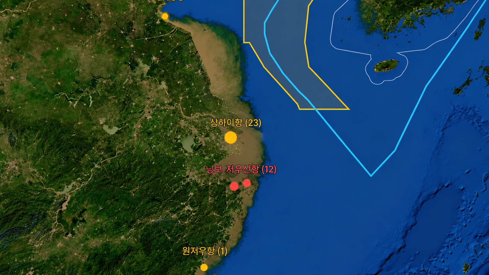

입항 관측 항만
9 개
감시 대상 12개소
GFW Port Visits 기반 중국 주요 항만 입항·체류·반복 기항 분석

연결 어시장 — 저우산 국제수산성
| 순위 | 항만 | 입항 | 의심 | 평균 체류 | 반복 | 우선순위 |
|---|
※ 위험도 종합점수 대신 관측 지표를 표시합니다. 일부 예측·AIS 특성 및 항만 동시 위치 제한이 확인되면 위험도 조정합니다.
| 항만 | 10-19 | 10-20 | 10-21 | 10-22 | 10-23 | 10-24 | 10-25 |
|---|
port_visit.durationHrs 기준 · 단기 ≤12h / 중기 12~48h / 장기 >48h
| 선박 | 선종 | 항만 | 기항 | 구분 |
|---|
| 권역 | 항만 후보 | 연결 어시장 |
|---|